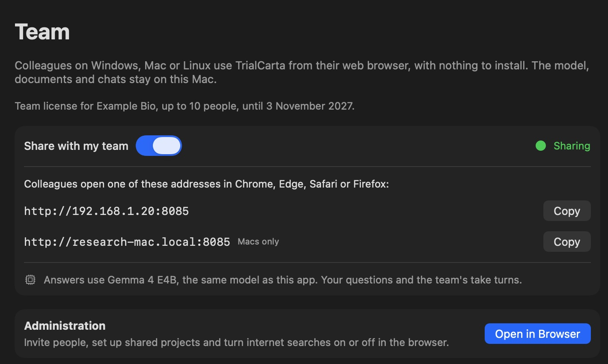

Confidential work stays on your computer.
TrialCarta is an app on your Mac, not a website. The AI model runs there too, so a protocol, a data-room document or a client brief is never uploaded anywhere. For a team, one Mac serves everyone's browser, and documents never leave your network.
What leaves the Mac, and what never does
Goes out, only when you search
- The search terms you type, to the public sources: ClinicalTrials.gov, PubMed, openFDA, SEC EDGAR and FDA's Orange Book.
- A target's or program's name to Crossref, to find congress abstract titles (TrialCarta Pro).
- A request to a company's own investor site, only when you click Load News on that company.
- Model downloads, when you choose a model.
Never leaves
- Your documents and linked folders.
- Your questions and the answers.
- Notes, short lists, projects and chats.
- Anything about who is using it. There's no cloud account, and no analytics in the app.
Searches go straight from the Mac to the public source. They don't pass through us.
One switch turns the internet off
Turn Internet Access off and TrialCarta stops searching, downloading and opening links. The model server and the document helpers run in a macOS sandbox that can only reach the Mac itself, so this is enforced by the operating system, not a promise.
- Work on a confidential protocol or data-room document with nothing going out
- On a team server, switch searches off for everyone, or just for one confidential project

Open models, running locally
No cloud AI service sees your questions or files, so there's no AI vendor to approve. Works with 16 GB of memory; with 32 GB it uses a larger model for the best answers.
Files on your Mac
Projects, chats and notes are files on the computer. Deleting a project deletes its data.
Nothing metered
No usage limits or per-query costs. A yearly license, checked on the Mac without calling home.
For teams: one server on your network, everyone's browser.
The server is an Apple silicon Mac: install TrialCarta on it and turn on Share with my team. Colleagues on Windows, Mac or Linux sign in from Chrome, Edge, Safari or Firefox, with nothing to install on their computers.
- Accounts by invitation. An administrator invites each person and they set their own password. Chats are private to whoever asked.
- Shared projects. One per study or client, with its documents and saved searches, open to the people you choose.
- Internet searches under your control. Turn public searches off for the whole team, or just for a confidential project.
- Everything stays on that Mac. Documents, questions and answers never leave it, and the AI model runs there for everyone. Add your company's certificate and colleagues connect over HTTPS.
- An activity log for administrators. Sign-ins, uploads, deletions, questions and admin changes are recorded with who and when; the text of questions is not.
- Priced per person. A yearly license for the number of people on your team.

The Team screen in TrialCarta, with example addresses.
Requirements
| The Mac running TrialCarta | Apple silicon (M1 or later), macOS 14 or later, 16 GB of memory (32 GB for the larger model) |
|---|---|
| Team members | Chrome, Edge, Safari or Firefox on Windows, Mac or Linux; nothing to install |
| Network | Your own network; colleagues reach the Mac by its address. Internet only for public searches and model downloads, and none with Internet Access off |
| HTTPS | Optional, with a certificate your IT issues for the Mac (.p12 or .pfx) |
| Accounts | Created on that Mac by an administrator; no cloud identity service |
Questions from IT and security reviews
Is any of our data sent to TrialCarta?
No. There's no TrialCarta cloud service in the loop. Searches go straight from your Mac to the public source, and everything else stays on the Mac.
Which AI model does it use, and where does it run?
Open-weight models that run on the Mac itself. You choose and download them in the app; no cloud AI provider is used.
Can we run it with no internet at all?
Yes, once a model is downloaded. Questions about your own documents work offline; public searches need the internet.
Do the AI's answers get checked?
Every trial ID, PubMed ID and file name an answer cites is checked against the records retrieved, and anything not found is flagged. Counts, charts, cash and runway come from fixed rules, not the model.
Do you have a Windows version?
Windows users use TrialCarta in their browser, through a team Mac on your network. Ask us about your setup.
Planning a security review?
We'll walk your IT team through what runs where, the Internet Access switch, and a team setup on one of your Macs.
Talk to us